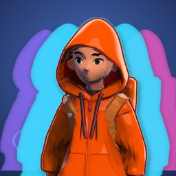

Echo Legion Privacy Policy
Effective November 17, 2026 (version 1.0.2)
Echo Legion (回声军团, "the game") is made by Jie Zhou. The short version: we collect anonymous gameplay statistics, never anything that identifies you. The only third party in the game is Google AdMob, which plays an optional rewarded video when you ask for one.
Information we collect
The game has no accounts and no sign-in. From version 1.0.2 it sends anonymous gameplay statistics to our own server: a random install ID created by the game (not your device's advertising ID), which stages you played and how they ended, upgrades, purchases made in the game, rewarded videos watched, the app version, and crash reports. This is used only to balance the game and fix bugs; it is not linked to your identity, not sold and not used for tracking. It contains no name, e-mail, location or contacts. Your save stays on your device.
Rewarded videos (Google AdMob)
The game can show a short video ad, but only when you press one of its video buttons (a free revive, a run's gems once more, a small gem pouch in the Shop); there are no banners and no ads that play by themselves. These videos come from Google AdMob. To serve and measure them, the Google Mobile Ads SDK collects data such as which ads were shown and tapped, coarse device and app information, diagnostics and crash data, and an app-specific identifier. The game never asks for permission to track you (no App Tracking Transparency prompt) and does not give AdMob access to your device's advertising identifier (IDFA). The data is not linked to your identity by us. See Google's policy: How Google uses information from sites or apps that use its services.
In-app purchases
Optional purchases (gem packs, the Monthly Card and two one-time packs) are processed by Apple through the App Store. We never see your payment details; Apple only tells the game that a purchase succeeded so it can deliver the item.
Children
We do not knowingly collect information from anyone, including children.
Changes
If this policy changes, the new version will be posted on this page with a new effective date.
Contact
Questions? Email jiezhou0731@gmail.com.
隐私政策（中文）
《回声军团》没有账号、没有登录。从 1.0.2 起，游戏会把匿名的游戏统计发到我们自己的服务器：游戏生成的随机安装 ID（不是设备广告标识符）、玩过哪些关卡和结果、升级、游戏内购买、观看的激励视频、版本号和崩溃报告，只用来调整平衡和修复问题，不与你的身份关联、不出售、不用于追踪，不包含姓名、邮箱、位置或联系人。存档只保存在你的设备上。游戏里唯一的第三方是 Google AdMob：只有你主动点视频按钮（免费复活、结算钻石翻倍、商店小份钻石）时才会播放激励视频，没有横幅，也没有自动播放的广告。为投放和统计这些广告，Google 移动广告 SDK 会收集广告展示与点击、设备与应用的大致信息、诊断数据等；游戏不会弹出追踪授权（ATT），也不会让 AdMob 读取设备广告标识符（IDFA）。可选内购由 Apple 通过 App Store 处理，我们看不到你的支付信息。如有疑问，请发邮件至 jiezhou0731@gmail.com。